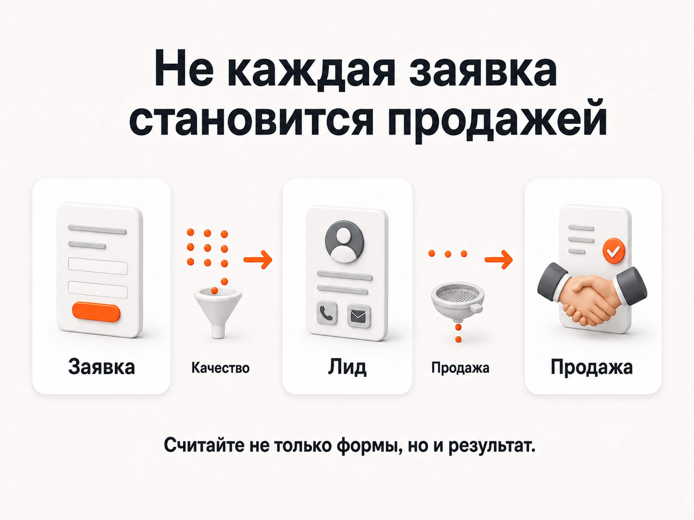

Блог о платном трафике
Почему Яндекс Директ не дает заявки и лиды
Если Яндекс Директ не дает заявки, сначала нужно определить, на каком этапе воронки возникает проблема: в трафике, сайте, качестве лидов или продажах.
Если Яндекс Директ не дает заявки, начинать с перенастройки кампаний не всегда правильно. Сначала нужно определить, на каком этапе воронки возникла проблема.
Путь клиента выглядит примерно так:
показы → клики → сайт → заявка → целевой лид → продажа
Каждый переход между этими этапами может быть слабым. Реклама может плохо приводить трафик. Трафик может быть хорошим, но сайт не превращает посетителей в обращения. Заявки могут поступать, но оказываться нецелевыми. Наконец, нормальные лиды могут теряться уже при обработке.
Поэтому ситуация «мало лидов» сама по себе почти ничего не говорит о причине.
Яндекс также рекомендует смотреть в первую очередь на показатели конверсий и реальные заказы, а не оценивать performance-рекламу только по CTR, цене клика или позиции объявления.
Источник: официальная справка Яндекса.
Сначала определите, где именно пропадают заявки
Для первичной диагностики я обычно раскладываю результат по этапам.
| Что происходит | Где искать проблему в первую очередь |
|---|---|
| Показов почти нет | Охват рекламы, спрос, ограничения кампаний |
| Показы есть, кликов мало | Объявление, аудитория, поисковый спрос |
| Клики есть, заявок нет | Качество трафика, сайт, оффер, технические ошибки |
| Заявки есть, но лиды плохие | Реклама, обещание в объявлении, квалификация |
| Целевые лиды есть, продаж мало | Цена, продукт, отдел продаж, обработка обращений |
Логика простая: ищем первый этап, на котором начинается заметная потеря.
Если объявления почти не получают трафик, бессмысленно сначала переделывать форму заявки. Если посетители активно заходят на сайт, но никто не обращается, одной корректировкой ставок проблему тоже обычно не решить.
Подробнее - «Аудит Яндекс Директ: что проверить и как найти проблемы в рекламе».
Убедитесь, что заявки действительно не поступают
Перед анализом рекламы нужно исключить ошибку аналитики.
Бывает, что обращения приходят, но часть из них не фиксируется:
- не срабатывает цель после отправки формы;
- не учитываются звонки;
- заявка попадает в CRM, но не в Метрику;
- одна из форм сайта вообще не отслеживается;
- цель срабатывает неправильно;
- данные разных систем сравниваются по разным правилам.
Официальная справка Яндекса при малом количестве конверсий первым делом рекомендует проверить счетчик Метрики и убедиться, что используемая цель действительно работает.
Источник: официальная справка Яндекса.
Если аналитика настроена неправильно, можно долго искать проблему в объявлениях, которой на самом деле нет.
Подробнее - «Как проверить цель в Яндекс Метрике».
Показы есть, а кликов мало
На этом этапе до сайта человек еще не дошел. Значит, проблема находится выше по воронке.
Нужно посмотреть, кому и в каких ситуациях показывается реклама.
На Поиске особенно показательны реальные поисковые запросы. Одно дело, когда объявление показывается человеку, который явно ищет конкретную услугу или товар. Другое - когда большая часть показов приходится на слишком общие, информационные или смежные запросы.
Для РСЯ логика другая. Здесь пользователь чаще не ищет товар непосредственно в момент показа, поэтому важны аудитория, площадка, креатив и само предложение.
Низкое количество кликов еще не означает, что объявления обязательно плохие. Причиной может быть небольшой объем спроса или слишком узкий охват.
На этом этапе задача бизнеса - понять, получает ли реклама достаточный доступ к нужной аудитории.
Клики есть, заявок нет
Это одна из самых неприятных ситуаций: деньги расходуются, посещения сайта идут, а обращений нет.
Здесь есть две принципиально разные причины:
- На сайт приходит не та аудитория.
- Аудитория подходит, но сайт плохо превращает ее в заявки.
Снаружи результат выглядит одинаково. Поэтому сначала нужно разделить трафик и посадочную страницу.
Проверьте, кто именно приходит на сайт
Для поисковой рекламы нужно посмотреть фактические запросы пользователей, а не только список ключевых фраз.
Запрос может выглядеть тематическим, но иметь совсем другое намерение. Человек может искать инструкцию, фотографии, отзывы, бесплатное решение, вакансию, запчасти вместо готового оборудования или услугу для другого сегмента.
В РСЯ нужно смотреть результат по аудиториям, площадкам, устройствам и другим доступным срезам.
Сам по себе дешевый переход ничего не доказывает. На моем сайте это отдельно разобрано в статье о цене клика: более дорогой трафик может быть выгоднее, если он лучше конвертируется в обращения.
Подробнее - «Цена за клик в Яндекс Директе».
Если определенная часть трафика регулярно расходует бюджет и не дает полезных действий, именно ее стоит исследовать глубже.
Трафик целевой, но сайт не дает заявки
Следующий вопрос: что видит пользователь после клика.
Рекламное объявление формирует определенное ожидание. Посадочная страница должна сразу подтвердить его.
Если человек искал конкретную услугу, а попал на общую главную страницу компании, ему приходится самому искать нужную информацию. Если в объявлении говорится об одном предложении, а первый экран сайта рассказывает совсем о другом, связка разваливается после клика.
Проверьте несколько вещей:
- понятно ли сразу, что именно предлагает компания;
- соответствует ли страница поисковому запросу и объявлению;
- видны ли цена, условия или основные преимущества, если они критичны для выбора;
- понятно ли, что произойдет после отправки формы;
- удобно ли оставить обращение с телефона;
- работают ли формы, кнопки и телефон;
- есть ли доказательства, которым можно доверять;
- не требует ли первый шаг от клиента слишком много усилий.
Яндекс прямо указывает, что статистика Метрики может использоваться для анализа поведения посетителей и поиска недостатков сайта. Даже большое количество показов и кликов еще не гарантирует результат, если посадочная страница плохо работает с полученным трафиком.
Источник: официальная справка Яндекса.
Подробнее - «Примеры продающих сайтов: оффер, доверие и конверсия».
Смотрите не на заявки вообще, а на конверсию сайта
Количество обращений само по себе легко вводит в заблуждение.
Если трафика стало вдвое меньше, уменьшение числа заявок может быть вполне ожидаемым. Если переходов столько же, а обращений стало заметно меньше, проблема уже больше похожа на падение конверсии.
Поэтому полезно разделять два показателя:
Количество заявок показывает абсолютный результат.
CR сайта показывает, какая доля посетителей совершает нужное действие.
В Директе и Метрике можно анализировать количество конверсий, CR и CPA по отдельным кампаниям и другим срезам.
Источник: официальная справка Яндекса.
Если мало заявок из Яндекс Директа из-за малого количества качественного трафика, увеличивать конверсию сайта недостаточно. Если посещений достаточно, а CR слабый, расширение рекламы способно только увеличить расходы.
Подробнее - «Конверсия в Яндекс Директ: что это и как считать CR».
Заявки есть, но целевых лидов мало
Следующий уровень диагностики начинается уже после формы или звонка.
Заявка и хороший лид - не одно и то же.
Например, реклама может приводить:
- обращения из неподходящих регионов;
- людей, которым нужна другая услуга;
- клиентов с неподходящим бюджетом;
- розничных покупателей вместо оптовых;
- физических лиц вместо компаний;
- спам и подозрительные обращения.
В рекламном кабинете все они могут выглядеть одинаково: цель выполнена, конверсия записана.
Для бизнеса результат разный.
Поэтому при большом количестве заявок нужно связывать рекламу хотя бы с информацией о качестве обращений. Иначе можно оптимизировать кампанию на увеличение числа форм, одновременно получая все меньше потенциальных покупателей.
Если проблема появляется здесь, я отдельно сравниваю рекламное обещание с тем, кто в итоге обращается. Иногда объявление слишком широко формулирует предложение и привлекает людей, которым компания фактически не может ничего продать.
Целевые лиды есть, а продаж нет
На этом этапе обвинять Яндекс Директ в отсутствии продаж уже опасно.
Реклама выполнила значительную часть своей функции: нашла человека, привела его на сайт и получила подходящее обращение.
Дальше на результат влияют:
- скорость ответа;
- возможность дозвониться до компании;
- качество первого разговора;
- цена;
- наличие товара или свободных мест;
- условия оплаты;
- работа менеджера;
- повторные контакты;
- продолжительность принятия решения клиентом.
Особенно это заметно в недвижимости, B2B, медицине, строительстве и других нишах с длинным циклом сделки.
Поэтому отчет «получили 50 заявок» без данных о качестве лидов и продажах дает неполную картину.
Данные из CRM и офлайн-конверсии можно передавать обратно в экосистему Яндекса. Центр конверсий поддерживает загрузку сведений о конверсиях и позволяет использовать их в статистике и оптимизации.
Источник: официальная справка Яндекса.
Чем ближе целевое действие, на которое ориентируется реклама, к реальному результату бизнеса, тем полезнее становится аналитика.

Почему фраза «Яндекс не дает заявки» часто мешает найти причину
Она объединяет несколько совершенно разных проблем.
Представим три ситуации.
В первой реклама приводит мало посетителей.
Во второй посетителей достаточно, но сайт почти не конвертирует.
В третьей заявки поступают регулярно, но большинство не проходит квалификацию.
Формально во всех трех случаях владелец может сказать: «Яндекс Директ плохо работает».
Решения при этом будут совершенно разными.
Поэтому я стараюсь не оценивать рекламную систему одним общим показателем. Сначала раскладываю результат на этапы, а затем ищу участок, где показатели начинают ухудшаться.
Как проверить Яндекс Директ, если заявок мало
Практическая последовательность выглядит так:
- Проверить, корректно ли учитываются реальные обращения.
- Посмотреть объем показов и кликов.
- Проверить качество полученного трафика.
- Посмотреть конверсию сайта в заявку.
- Отделить все обращения от целевых лидов.
- Проверить, сколько целевых лидов превращается в продажи.
- Найти первый этап, на котором возникает основная потеря.
- Работать именно с этим этапом, а не одновременно менять всю систему.
Это гораздо полезнее, чем открывать рекламный кабинет и начинать подряд менять ставки, объявления, аудитории и стратегии.
Если одновременно изменить рекламу, сайт и предложение, потом трудно понять, что именно повлияло на результат.
Главное
Если клики есть, заявок нет, это еще не доказывает, что проблема находится в Яндекс Директе.
Нужно пройти всю цепочку:
показ → клик → сайт → заявка → целевой лид → продажа
Плохой результат появляется в конкретном месте этой цепочки. Иногда это нецелевой трафик. Иногда слабая посадочная страница. Иногда аналитика считает обращения неправильно. Иногда лиды нормальные, но уже после рекламы бизнес теряет их на этапе продажи.
Поэтому главный вопрос должен звучать не «почему Директ не работает», а «на каком этапе мы теряем клиента?»
После ответа на него обычно становится намного понятнее, что действительно нужно исправлять.
Подробнее - главная страница с кейсами по рекламным проектам.